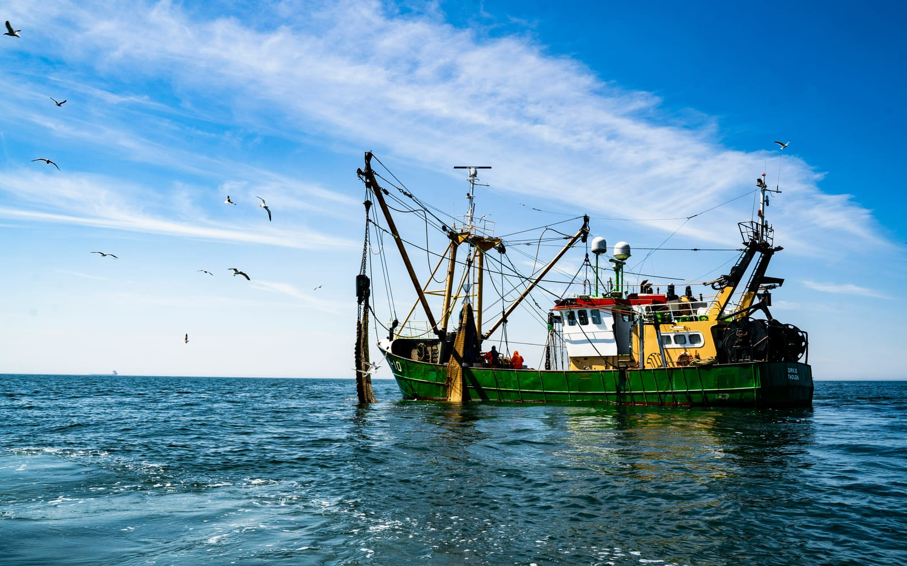
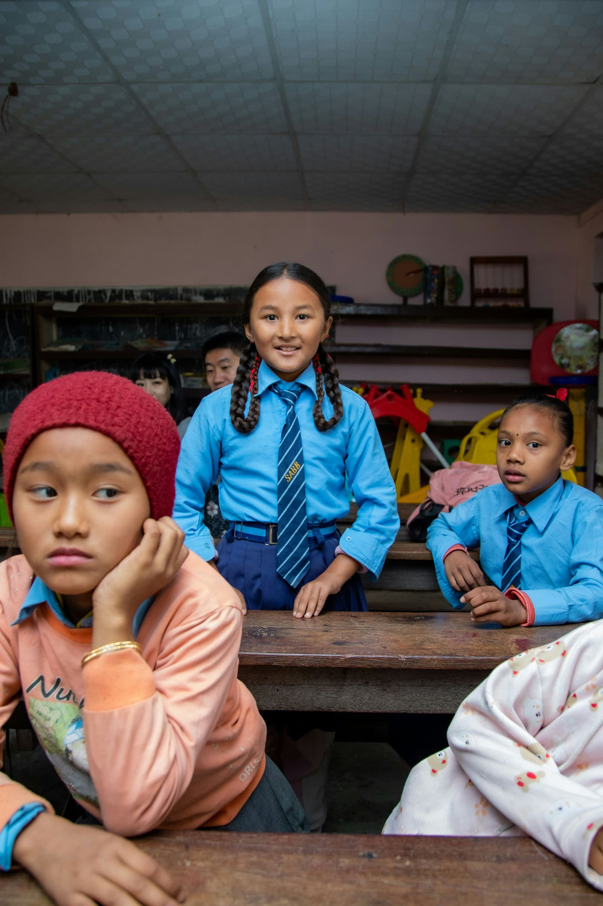
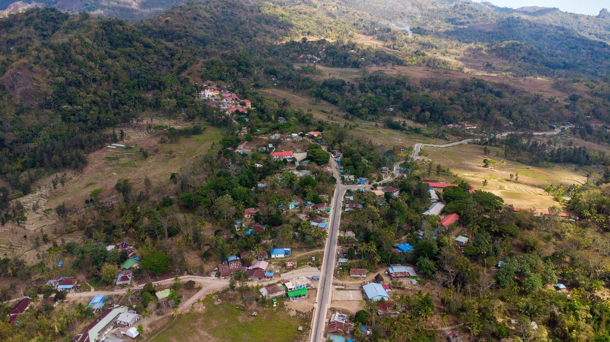

Mountain shelters
Remote huts where cell coverage never arrives and running a cable isn't an option.
Open-source mesh network
Phones, small radios, and local computers pass messages, content, and services directly to each other — no towers, no satellite link, no connection required.
Say you're at a mountain hut with no signal, and someone nearby has a copy of Wikipedia stored locally. You don't connect to their device — you just ask for the page you want.
You never need to know which device has it, how many hops away it is, or whether it's reachable right now. The network works that out on its own — the same way a letter reaches you without you knowing which trucks carried it.
GET content://wikipedia/italy
# the network finds a path —
# device to device, hop by hop —
# and delivers it.How it works
A phone, a radio card, a fixed relay, a small computer — each one can hold content, pass it along, and ask for more. Nothing routes through a central server.
When two devices come within range — Bluetooth, long-range radio, or plain local Wi-Fi — they exchange what they know and move on, carrying requests and answers forward.
If no one nearby can answer right now, a message waits. The next device that can carry it forward picks it up on the next contact — a hiker, a boat, a relay coming back online.
Where it works
Equally important — not a hierarchy.
Remote huts where cell coverage never arrives and running a cable isn't an option.
Earthquakes, floods, fires — exactly when normal networks are damaged, overloaded, or without power.
Field bases, mobile clinics, and temporary camps in areas without reliable infrastructure.
The same architecture applies anywhere connectivity can't be assumed:



The hardware
Pocket-sized radio. Sends an SOS, relays other people's messages, or both.
Same logic, fixed and solar-powered, or carried along as a courier.
A small always-on computer: content, local search, translation, AI, coordination.
The same environment on a bootable drive — plug into whatever computer is on hand.
None of these need the internet to talk to each other. A gateway can optionally bridge out when a connection is available — never a requirement.
Where things stand
Core networking — identity, routing, encryption, store-and-forward, content caching — runs today over real local networks and is covered by automated tests. Radio transports and higher-level features are built and tested in software. The physical devices haven't been manufactured yet.
We say this plainly because it matters: this is real, working code — not a pitch deck. What's still ahead is hardware, field testing, and scale.
Explore the code and docs →Follow the project on GitHub — that's where development happens, in public, today.